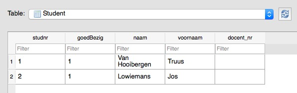
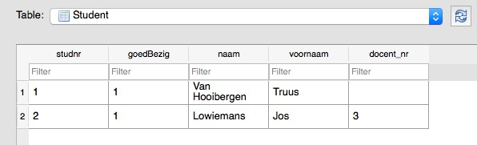

JPA of de Java Persistence API is een deel van Java EE (Java Enterprise Platform), een set van specificaties die initiëel de JDK SE 8 versie uitbreidden met “enterprise” features zoals distributed computing en web services. J2EE wordt vooral ingezet als het gaat over grote applicaties die bedrijven ontwikkelen voor andere bedrijven (zogenaamde “B2B”, Business 2 Business, of Enterprise Software Development).
Ondertussen is J2EE omgevormd tot Jakarta EE. In principe staat JPA nu voor Jakarta Persistence API… What’s in a name.
De API, levend in de package javax.persistence, is een manier om relationele data voor te stellen in enterprise Java applicaties, door middel van Objecten. Het is dus een mapping tool die object/relationale (meta)data bewerkt en verwerkt. JPA heeft ook zijn eigen query language, JPQL, die het eenvoudiger moet maken om queries te schrijven in Java code zelf in plaats van in SQL, die vertaald worden naar SQL. Dit vereenvoudigt refactoring en vermindert mogelijke fouten in de SQL string die te laat naar boven komen (nu compiletime ipv runtime, aangezien Java statisch getypeerd is).
JPA is niet meer dan een specificatie die de interfaces en annotaties voorziet. De implementatie, en de klasses, worden overgelaten aan vendors, waarvan voor JPA 2.2 de volgende vendors beschikbaar zijn:
JPA 2.2 Gradle dependency: compile group: 'javax.persistence', name: 'javax.persistence-api', version: '2.2'
Volgens de hibernate.org website:
Your relational data. Objectively.
Hibernate is dé populairste object-relational mapper in Java die de JPA standaard implementeert. Hibernate heeft zowel een eigen API als een JPA specificatie, en kan dus overal waar JPA nodig is ingeschakeld worden. Het wordt vaak in omgevingen gebruikt waar performantie belangrijk is, en waar enorm veel data en gebruikers data transferreren.
Belangrijk startpunt: Hibernate getting started guide Ook Hibernate werkt met modules, zoals Jdbi3. We gebruiken hibernate-core; via Gradle: compile group: 'org.hibernate', name: 'hibernate-core', version: '5.4.23.Final'
Het gebruik van Hibernate geeft meestal een aantal mogelijkheden:
hbm.xml mapping (Zie “2. Tutorial Using Native Hibernate APIs and hbm.xml Mapping”)Waarvan wij #3 gaan hanteren.
JPA bootstrappen kan - net zoals JDBC en Jdbi - vrij eenvoudig met een statische klasse Persistence die een sessionFactory object aanmaakt. Elke session factory stelt een verbinding voor tussen de Java code en de Database zelf. Om te kunnen werken met objecten moet je vanuit de session factory de entity manager creëren. Vanaf dan kan er worden gewerkt met de database via de entity manager instantie.
var sessionFactory = Persistence.createEntityManagerFactory("be.kuleuven.mijnmooiepackage");
var entityManager = sessionFactory.createEntityManager();
// do stuff with it!
// entityManager.createQuery(...)javax.persistence.Persistence gaat op zoek naar een persistence.xml bestand in de map src/main/resources/META-INF. Die bevat alle connectiegegevens en instellingen. De persistence XML file is de belangrijkste file van je hele applicatie, waar caching strategie, driver management, table autocreation, … allemaal in wordt bepaald!
Een voorbeeld XML file:
<?xml version="1.0" encoding="UTF-8" ?>
<persistence version="2.1"
xmlns="http://xmlns.jcp.org/xml/ns/persistence" xmlns:xsi="http://www.w3.org/2001/XMLSchema-instance"
xsi:schemaLocation="http://xmlns.jcp.org/xml/ns/persistence http://xmlns.jcp.org/xml/ns/persistence/persistence_2_1.xsd">
<persistence-unit name="be.kuleuven.studenthibernate.domain">
<description>Studenten JPA Test</description>
<provider>org.hibernate.jpa.HibernatePersistenceProvider</provider>
<properties>
<property name="javax.persistence.jdbc.driver" value="org.sqlite.JDBC"/>
<property name="javax.persistence.jdbc.url" value="jdbc:sqlite:studenten.db"/>
<property name="javax.persistence.jdbc.user" value=""/>
<property name="javax.persistence.jdbc.password" value=""/>
<property name="javax.persistence.schema-generation.database.action" value="drop-and-create"/>
<property name="hibernate.dialect" value="org.hibernate.dialect.SQLiteDialect" />
<property name="hibernate.connection.autocommit" value="true"/>
<property name="hibernate.show_sql" value="true"/>
<property name="hibernate.flushMode" value="ALWAYS" />
<property name="hibernate.cache.use_second_level_cache" value="false" />
<property name="hibernate.cache.provider_class" value="org.hibernate.cache.NoCacheProvider" />
</properties>
</persistence-unit>
</persistence>Bevat onder andere de volgende belangrijke properties:
javax.persistence JDBC driver/url. Merk op dat achterliggend dus nog steeds JDBC wordt gebruikt! Dat betekent ook dat we de sqlite dependency sqlite-jdbc van de groep org.xerial nog steeds nodig hebben.schema-generation properties: drop-and-create betekent dat tabellen die niet bestaan automatisch worden aangemaakt. Geen CREATE TABLE statements meer nodig, dus.hibernate.dialect: voor vendor-specifieke queries te genereren moet Hibernate weten welke database wij hanteren. Dit staat los van de jdbc driver! Hiervoor gebruiken we het dialect van dependency compile group: 'com.zsoltfabok', name: 'sqlite-dialect', version: '1.0'.show_sql print de gegenereerde queries af in de console, handig om te zien hoe Hibernate intern werkt, en om te debuggen.Er ontbreekt hierboven nog een belangrijk gegeven: elke entity (domein object dat een tabel voorstelt in de code) moet met fully qualified name in een <class/> tag onder <persistence-unit/> worden toegevoegd. Anders herkent JPA het object niet, en heeft hij geen idee welke kolommen te mappen op welke properties. Die metadata zit namelijk in de entity klasse zelf.
Meer informatie: zie hibernate.org documentatie en A beginners guide to JPA persistence xml.
Nu de verbinding tussen de DB en Hibernate/JPA tot stand werd gebracht, is het tijd om gebruik te maken van de kracht van de library.
Om kolommen te kunnen mappen op properties voorziet JPA een aantal annotaties als meta-data op het domeinobject zelf. Dat betekent dat DB beschrijving netjes bij het object waar het hoort wordt geplaatst. Bijvoorbeeld:
@Entity
public class Huis {
@Column
@Id
@GeneratedValue
private int id;
@Column(name = "beschr")
private String beschrijving;
@Column
private int prijs;
}Het datatype kan ook worden ingesteld met @Column (merk op dat de kolomnaam van de tabel in de DB kan en mag wijzigen van de property name in Java), bijvoorbeeld voor temporele waardes waar enkel de tijd of datum wordt bijgehouden op DB niveau. Merk op dat @Id nodig is op een @Entity - zonder primary key kan JPA geen object persisteren. @GeneratedValue is er omdat wij niet telkens de ID willen verhogen, maar dat willen overlaten aan de database vanwege de AUTOINCREMENT. Bij elke persist() gaat Hibernate de juiste volgende ID ophalen, dat zich vertaalt in de volgende queries in sysout:
Hibernate: select next_val as id_val from hibernate_sequence
Hibernate: update hibernate_sequence set next_val= ? where next_val=?
Hibernate: insert into Student (goedBezig, naam, voornaam, studnr) values (?, ?, ?, ?)De tabelnaam kan je wijzigen met de @Table annotatie op klasse niveau.
Hoe bewaar ik een entity? entityManager.persist(object). That’s it!
Hoe update ik een entity, als properties zijn gewijzigd? .merge(object)
Merk op dat in de Sysout output geen query wordt gegenereerd. Hibernate houdt alles in zijn interne cache bij, en zal pas flushen naar de database wanneer hij acht dat dat nodig is. Dat kan je zelf triggeren door entityManager.flush() te gebruiken (kan alleen in een transactie) - of het commando te wrappen met een transactie:
entityManager.getTransaction().begin();
entityManager.persist(dingdong);
entityManager.getTransaction().commit();Zonder dit, en met herbruik van dezelfde entity manager in SQLite, is er een kans dat je SELECT query niets teruggeeft, omdat de INSERT nog niet werd geflushed. De interne werking van combinatie JDBC+SQLite+JPA+Hibernate is zeer complex en zou een cursus van 20 studiepunten vereisen…
Hoe query ik in JPA? Dit kan op verschillende manieren. We beperken ons hier tot de JPA Criteria API. Een voorbeeld. Gegeven een huizenlijst, waarvan we huizen willen teruggeven die onder de 200.000 kosten. In SQL zou dit SELECT * FROM huizen WHERE prijs < 200000 zijn. In Criteria API:
var criteriaBuilder = entityManager.getCriteriaBuilder();
var query = criteriaBuilder.createQuery(Huis.class);
var root = query.from(Huis.class);
query.where(criteriaBuilder.equal(root.get("prijs"), 200000));
return entityManager.createQuery(query).getResultList();Voor simpele queries zoals deze is dat inderdaad omslachtig, maar de API is zeer krachtig en kan automatisch complexe queries genereren zonder dat wij ons moe moeten maken. Merk op dat wij geen enkele letter SQL zelf schrijven. Alles is java code, wat het eenvoudig maakt om te refactoren, redesignen, statische code analyse op te doen, unit testen, … Lees meer over criteria API:
Controleer in de sysout output welke query Hibernate uiteindelijk genereert. Dat ziet er zo uit:
select student0_.studnr as studnr1_0_, student0_.goedBezig as goedbezi2_0_, student0_.naam as naam3_0_, student0_.voornaam as voornaam4_0_ from Student student0_ where student0_.naam=?Quickstart project: hibernate-jpa-start.zip!
StudentRepository interface, naast de JDBC en Jdbi3 versies: StudentRepositoryJpaImpl. Probeer een nieuwe student te bewaren én daarna dezelfde student op te halen en af te drukken in sysout. Wat heb je daar weer voor nodig? (Scroll up!)
resources/META-INF.Student klasse.EntityManager.EntityManager gebruikt (tip: constructor injectie!)Modelleer ook de log tabel uit 1. Failures/rollbacks. Bewaar een log record bij elke wijziging van student (aanmaken, wijzigen). Vergeet geen <class/> entry toe te voegen in je persistence.xml! Anders krijg je de volgende fout:
Exception in thread "main" java.lang.IllegalArgumentException: Not an entity: class be.kuleuven.studenthibernate.domain.Student
at org.hibernate.metamodel.internal.MetamodelImpl.entity(MetamodelImpl.java:566)
at org.hibernate.query.criteria.internal.QueryStructure.from(QueryStructure.java:127)
at org.hibernate.query.criteria.internal.CriteriaQueryImpl.from(CriteriaQueryImpl.java:158)Kies altijd bewust voor één bepaald framework in plaats van “random” of “uit ervaring”: JPA/Hibernate is vaak overkill voor simpele applicaties, JDBC is vaak té low-level en bevat veel boilerplating, terwijl Jdbi3 daartussen ligt.
Zijn er nog alternatieven? Uiteraard, en meer dan één… Maar dat reikt buiten de scope van deze cursus.
De grootste kracht van JPA hebben we nog steeds niet gezien: in plaats van één of meerdere entiteiten onafhankelijk te mappen, kunnen we ook relaties mappen en Hibernate alles op SQL-niveau laten afhandelen. Nooit meer JOIN statements schrijven, hoera!… Niet altijd. Soms wil je de queries anders aanpakken dan Hibernate ze genereert omwille van performantie redenen. In dat geval zal je nog steeds moeten teruggrijpen naar native SQL - of veel tijd investeren in de correcte configuratie van de Hibernate/JPA/JDBC installatie.
Een concreet voorbeeld. Een Docent entiteit geeft les aan verschillende studenten:
@Entity
public class Docent {
@Id
@GeneratedValue
private int docentennummer;
@Column
private String naam;
@OneToMany(mappedBy = "docent")
private List<Student> studenten;
}De @OneToMany annotatie zorgt voor de link tussen de studenten- en docententabel: het is wel nog nodig om een omgekeerde mapping property genaamd docent toe te voegen op de Student klasse:
@Entity
public class Student {
// ...
@ManyToOne(fetch = FetchType.LAZY)
@JoinColumn(name = "docent_nr")
private Docent docent;
}Op die manier kan je van docenten onmiddellijk zien aan wie ze lesgeven (one to many), en van een student van wie hij of zij les krijgt (many to one). De data wordt in de studententabel bewaard, in kolom docent_nr. Andere configuraties zoals tussentabellen zijn uiteraard ook mogelijk.
Persisteren we nu een nieuwe docent waar een reeds bewaarde student in de lijst werd toegevoegd:
private static void docentenTest(EntityManager entityManager, Student student) {
var wouter = new Docent("Wouter");
wouter.geefLesAan(student);
entityManager.getTransaction().begin();
entityManager.persist(wouter);
entityManager.getTransaction().commit();
}Geeft in Hibernate:
Hibernate: select next_val as id_val from hibernate_sequence
Hibernate: update hibernate_sequence set next_val= ? where next_val=?
Hibernate: insert into Docent (naam, docentnummer) values (?, ?)SQLite browser:

Waar is onze docent_nr data? De methode geefLesAan voegt enkel toe aan de studentenlijst, maar de relatie moet voor beide entities kloppen:
public void geefLesAan(Student student) {
studenten.add(student);
student.setDocent(this);
}Zonder de tweede regel wordt de kolom niet ingevuld. Geeft nu:
Hibernate: select next_val as id_val from hibernate_sequence
Hibernate: update hibernate_sequence set next_val= ? where next_val=?
Hibernate: insert into Docent (naam, docentnummer) values (?, ?)
Hibernate: update Student set docent_nr=?, goedBezig=?, naam=?, voornaam=? where studnr=?Bingo, een UPDATE statement in de studententabel. SQLite Browser:

Docent klasse zoals hierboven.
FetchType.LAZY schiet in gang. Verander dit naar EAGER. Kijk in de Hibernate output wat er verandert op SQL niveau en verifiëer dat er nu een LEFT OUTER JOIN in de SELECT van de student staat.Pas op het moment dat de data van de docent effectief nodig is, zoals bij het afdrukken, wordt een SELECT query gelanceerd bij lazy-loading. Bijvoorbeeld:
var student = entityManager.find(Student.class, jos.getStudentenNummer());
System.out.println("student " + student.getNaam());
System.out.println(" -- heeft als docent " + student.getDocent().getNaam());Geeft als sysout output:
Hibernate: select student0_.studnr as studnr1_1_0_, student0_.docent_nr as docent_n5_1_0_, student0_.goedBezig as goedbezi2_1_0_, student0_.naam as naam3_1_0_, student0_.voornaam as voornaam4_1_0_ from Student student0_ where student0_.studnr=?
student Lowiemans
Hibernate: select docent0_.docentnummer as docentnu1_0_0_, docent0_.naam as naam2_0_0_ from Docent docent0_ where docent0_.docentnummer=?
-- heeft als docent WouterMerk op dat de eerste System.out.println vóór de docenten SELECT query komt. Een eager-loaded docent geeft andere output:
Hibernate: select student0_.studnr as studnr1_1_0_, student0_.docent_nr as docent_n5_1_0_, student0_.goedBezig as goedbezi2_1_0_, student0_.naam as naam3_1_0_, student0_.voornaam as voornaam4_1_0_, docent1_.docentnummer as docentnu1_0_1_, docent1_.naam as naam2_0_1_ from Student student0_ left outer join Docent docent1_ on student0_.docent_nr=docent1_.docentnummer where student0_.studnr=?
student Lowiemans
-- heeft als docent WouterTip: entityManager.clear() of close() een nieuwe aanmaken kan helpen om de persistence context te flushen ter test.